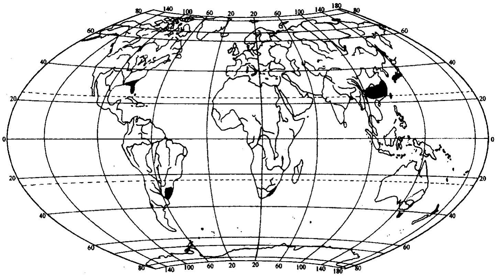

常绿阔叶林的全球分布及其重要性
北半球北纬25°-35°之间的中纬度地带，在副热带高压和热带气旋影响下，大部分地区炎热干旱，大部区域分布的是荒漠和半荒漠，而我国在这一纬度地区，在季风气候影响下，发育着一种独特的植被类型——“常绿阔叶林”。常绿阔叶林的物种多样性仅次于热带雨林，是地球上重要的基因库。以我国为例，常绿阔叶林中维管束植物的种类不少于10000种，全国11个陆地生物多样性保护关键区域，一半位于常绿阔叶林分布区内。

常绿阔叶林分布地区气候温暖湿润，物产丰富，最适合人类居住。我国长江流域和珠江流域，以及五千年前的黄河流域都是常绿阔叶林分布地区，中华民族和中华文化也是在常绿阔叶林中孕育发展的。但在一个相当长的时期内，对这一独特的植被类型并未引起人们的足够重视，国际上在论述常绿阔叶林时，总是以地中海地区的照叶林为例，偶尔提到亚洲的常绿阔叶林也很简单。20世纪70年代开始，这一植被类型才引起国际植被学界的关注。

常绿阔叶林在我国分布最广，南北纵跨约10个纬度（23°33°N），东西横贯约25个经度（98°123°E），如果把东喜马拉雅山地上分布的常绿阔叶林也计算在内，则可延伸到91°E。我国常绿阔叶林类型复杂多样，乃是全球常绿阔叶林的主体，但是长期以来人们对它的重要性认识不足，常常把它当成不成才的“杂木林”而屡遭砍伐，致使目前在它的分布区内留存的面积已很稀少，不到总面积的4%。

“当人们寻求生物资源，并为生物多样性丧失而忧伤的时候，关注的重点是热带雨林；当人们为荒漠扩张、生态环境恶化而恐慌的时候，更多关注的是荒漠和草原。要知道常绿阔叶林生物多样性也很丰富，其分布区域人口密集，长期的人类活动对常绿阔叶林的消耗和破坏产生的资源和环境问题也很严重，在关注生物多样性保护和防治生态环境恶化时不能忽视常绿阔叶林。对现存的这种我国独特的植被类型进行系统研究，不仅有利于生物多样性的保护，而且也有利于生态环境的改善，对地区的可持续发展具有重要意义。”
— 宋永昌《中国常绿阔叶林》第15页（2013）
“从现有的事实看，生物是在一定的时期，一定的地区生态系统中发生和演化的，被子植物和它相关的高等动物都是以常绿阔叶树种为主的常绿阔叶林，特别是热带、亚热带山区发生和发展演化。…… 热带山地、亚热带常绿阔叶林的研究不仅对现在的生态系统保护和发展有重要意义，将来很可能在人类’上天’的时候，也要用这些科学资料。”
— 吴征镒院士为哀牢山森林生态系统研究站题词（2002）